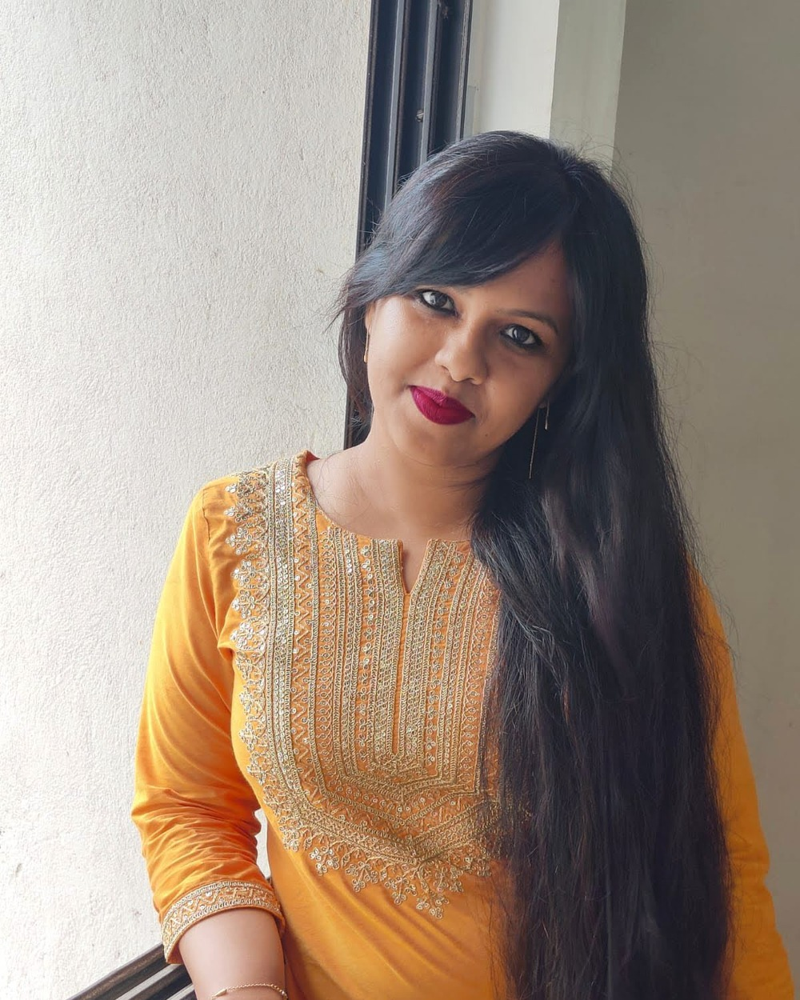

Voice & Conversational Commerce
The Voice of Effortless Discovery
Translating complex product ecosystems into concise, conversational narratives that build consumer trust at scale.
Fashion, Luxury & Lifestyle Content · Kolkata, India
Strategic storytelling for fashion, luxury, beauty, and premium lifestyle brands.

About
Hi, I'm Srijayee — a content strategist based in Kolkata, building a focused career in fashion and luxury storytelling.
My background spans e-commerce copywriting and AI-driven content quality at Amazon, with an independent fashion platform of my own (Ivygstyles) running since 2024. I hold a certification in Fashion & Luxury Brand Management from Bocconi University, and I'm currently focused on bringing that combination — commercial writing discipline plus a genuine interest in fashion and luxury — to a brand team.
01 — The Pivot
“I do not simply write; I curate identity.”
For three years, I have navigated the intersection of language and intent, crafting high-performance content for global e-commerce giants and technology leaders. My foundation is built on the rigor of SEO strategy, the discipline of Amazon-level product narration, and a relentless focus on measurable impact.
Yet, my professional evolution has led me to a singular focus: the art of the luxury experience. Armed with a specialization in Luxury Brand Management from the University of Bocconi, I now translate my technical command of digital strategy into the nuanced storytelling required by heritage and contemporary luxury houses. I do not simply write; I curate identity, orchestrate brand voice, and bridge the space where digital accessibility meets the exclusivity of the high-end market.
02 — Services
Product pages and category copy for fashion, beauty, jewelry, and lifestyle brands — written to sell without reading like a spec sheet.
Long-form narrative that explains why a brand exists — heritage, positioning, and the story behind the product.
Launch sequences, restock alerts, and editorial newsletters written to be opened, not skipped.
SEO-aware long-form content across fashion, beauty, jewelry, and hospitality categories — built to educate and to rank.
Campaign-ready copy for new drops, seasonal lines, and limited editions — from teaser to full reveal.
Caption writing, campaign concepts, and cross-platform brand voice — one strategy, several formats.
E-commerce catalogues, landing pages, and structured content at scale — the high-volume discipline that underpins all of the above.
03 — Selected Works
Voice & Conversational Commerce
Translating complex product ecosystems into concise, conversational narratives that build consumer trust at scale.

Fashion & Heritage Retail — Taneira
Pairing tight, scannable product copy with rich sensory narrative — the same brand voice, held across two registers.

Heritage & Celebration Wear — Manyavar
A campaign brief, translated into two on-tone editorials — without losing the warmth of the brand.

Fine Jewelry — Tanishq & Candere
Long-form, SEO-structured content for two jewelry houses — written to educate as much as it sells.

Multi-Format Campaign Strategy — Teravarna
Campaign strategy, social copy, crisis response, and outreach — one consistent brand voice across six formats.

Luxury Watches — Just In Time
A 1,500-word SEO blog on the Furla watch collection — long-form luxury storytelling for an authorized multi-brand retailer.
04 — Spec Projects
Speculative work for brands I haven't worked with yet — written to show range, not claimed as client history. Five different brand voices, five different formats.

Spec Project — Not Affiliated with Sézane
An original product page written in Sézane's warm, unhurried register — proof of voice, not a real listing.

Spec Project — Not Affiliated with Levi's
A fictional collection story in Levi's plain-spoken, generational register — denim as inheritance, not trend.

Spec Project — Not Affiliated with Nike
A 7-day Instagram launch arc for a fictional running shoe — short, second-person, built to build momentum.

Spec Project — Not Affiliated with Bottega Veneta
A product page written in Bottega Veneta's signature restraint — letting craft speak instead of adjectives.

Spec Project — Not Affiliated with Gucci
A launch email in Gucci's maximalist, eclectic register — the deliberate opposite note from Bottega Veneta above.
05 — Archive
A running index of writing samples and content strategy pieces.
06 — Expertise
Education & Certifications
B.A. (Honours), Journalism & Mass Communication — Ashutosh College, University of Calcutta
Management of Fashion and Luxury Companies — Università Commerciale Luigi Bocconi (Bocconi University), Score: 85%
Digital Marketing — Google Digital Garage
The Complete Copywriting Course — Udemy
Product Management Professional Certificate — Coursera (In Progress)
Skills & Tools
Currently Learning
07 — Availability
Status
Actively seeking full-time roles
Work Mode
Remote, in-office, or hybrid
Location
Kolkata — open to relocation
Also open to freelance and project-based work alongside a full-time role.
08 — Work With Me
For fashion, luxury, and lifestyle brands looking for content that sounds like it belongs to you — not a template.